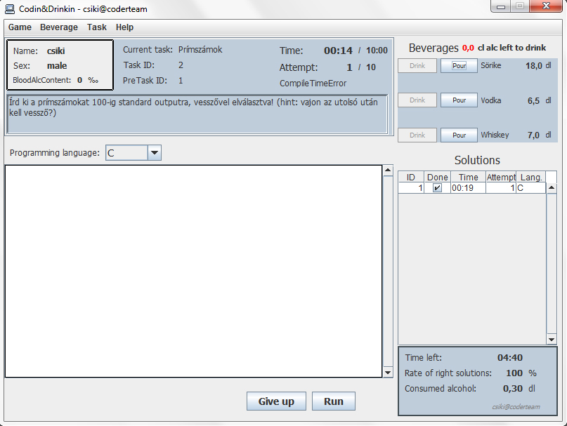

Hogyan futtasd és fejleszd a Codin&Drinkin© szoftvert.
Program létrejöttének oka és funkcionalitásainak rövid leírása.
A szoftver feladata egy esélykiegyenlítős programozás (verseny) során, egy-egy játékos játékmenetét vezetni, lehetőség szerint egységesíteni a többi játékos játékmenetével, mindenkinek egyenlő esélyeket biztosítva. További feladata olyan adatok adminisztrációja, mint az eddig megivott alkohol mennyisége, a véralkoholszint, feladatokra adott megoldások helyességének aránya, használt programozási nyelvek, a feladatok megoldására felhasznált idő, vagy próbálkozások száma. A felhasználó által megírt kódot lefordítja, lefuttatja, bemenetek biztosít ha szükséges és ellenőrzi a kimenetet.
TaskGenerator console-os programmal hozhatunk létre feladatokat, melyeket Codin&Drinkin© szoftverrel játszathatunk (TaskGenerator használatához lásd: Feladatok létrehozása).
A program képes:
A program elsődleges célja, hogy az esélykiegyenlítős programozás versenyét rendszeres eseménnyé avanzsálja, melyben ötvözi az algoritmusok és programnyelvek oktatását, és az önfelett szórakozást kompetitív keretek közt.
Útmutató a program használatba helyezéséhez és futtatásához.
A szoftver installálása, futtatási környezetének követelményei.
A szoftver "telepítése".
Különösebb telepítésre nincs szükség; a program futás közben maga köré létrehoz 2 mappát a kód- és futtatható fájloknak (code és runnable mappa).
A CodinAndDrinkin.jar állomány elegendő a program elindításához.
A futtató környezettel szemben támasztott követelmények, és azok biztosításának leírása, útmutatója.
A CodinAndDrinkin.jar futtatásához szükség van JDK 6 (vagy újabb) Java futtató környezetre a használt rendszeren. Amennyiben ez nincs jelen, innen letölthető, majd installálható: Java SE Downloads.
A dokumentáció létrejöttekor (2013. február) két fordító volt jelen a programban: C és C++. Ahhoz, hogy ezek működhessenek szükségünk van gcc és g++ fordítóra a rendszeren, amiknek bent kell lenniük path-ban.
Amennyiben nincs fenn gcc, vagy g++ (tipikusan ha fent van CodeBlocks, akkor fent kell lennie), töltsük le, majd telepítsük innen: GCC Releases vagy CodeBlocks binary download.
CodeBlocks kis szerencsével beállítja gcc-t és g++-t path-ba. Tesztelhetjük a következő módon: indítsunk windows alatt egy command prompt-ot, linux alatt termialt, majd írjuk be, hogy "gcc -v". Ha a cmd vagy a terminal nem tudja értelmezni a parancsot, akkor nincs path-ba. A megfelelő kimenet windowson a következő:
C:\Users\csiki>gcc -v Using built-in specs. COLLECT_GCC=gcc COLLECT_LTO_WRAPPER=c:/program files (x86)/codeblocks/mingw/bin/../libexec/gcc/m ingw32/4.7.0/lto-wrapper.exe Target: mingw32 Configured with: ../gcc-4.7.0/configure --enable-languages=c,c++,ada,fortran,obj c,obj-c++ --disable-sjlj-exceptions --with-dwarf2 --enable-shared --enable-libgo mp --disable-win32-registry --enable-libstdcxx-debug --disable-build-poststage1- with-cxx --enable-version-specific-runtime-libs --build=mingw32 --prefix=/mingw Thread model: win32 gcc version 4.7.0 (GCC)
Amennyiben nincs path-ban (nincs beállítva megfelelően a környezeti változó) a következőket csináljuk windows7 alatt: Számítógép / Rendszer tulajdonságai / Speciális rendszerbeállítások / Környezeti változók. Itt a Rendszerváltozóknál megkeressük a Path változót, kiválasztjuk, majd rákattintunk a Szerkesztésre. Itt megtoldjuk a Változó értékét a következőkkel: ";C:\gcc_eleresi_utja\MinGW\bin\" (pontosvesszővel válasszuk el az előző elérési útvonaltól). Pl. ha CodeBlocksot telepítettünk alapbeállításokkal 64 bites win7re: ";C:\Program Files (x86)\CodeBlocks\MinGW\bin\".
Linux alatt a környezeti változók (environment variables) beállítását disztribúciónként változó lehet, keressünk utána, hogyan lehetséges.
Amennyiben C és C++ fordítón kívül más is van/lett implementálva Codin&Drinkin©-be, ide írjuk le a követelményeket!
Program kezelése futás közben, használatának leírása.
Program elindításának menete.
Program indítása a CodinAndDrinkin.jar indításával történik, amennyiben a Követelmények biztosítottak.
Amennyiben C, vagy C++ (az implementációjuktól függően további) fordítók működéséhez szükséges Követelmények nincsenek biztosítva, a program jelzi ezt induláskor. Ha egy fordítónak sincs biztosítva, a program terminál a felhasználói felület betöltése előtt (ezt is jelzi egy üzenettel).
A felhasználói interface részeinek rövid leírása, bemutatása.
A felhasználói interface így nézhet ki win7-en.
Betöltött italok felsorolására.
Új játék indításának menete.
Új játék indítása a Game menüpont alatt található New Game menüelemre való kattintással történik.
Ekkor előjön egy dialógus ablak melyben a játékosnak meg kell adnia nevét, nemét, magasságát, tömegét. Az OK gomb lenyomása csak akkor történhet meg, ha minden értéket megadunk és ha az értékek látszólag helyek.
Ezt követően a Player részleg mezői kitöltődnek és lehetőségünk nyílik egy (vagy több) ital felvételére.
Új (alkoholtartalmú) ital hozzáadása a listához.
Amint elindítottunk egy játékot, fel kell vegyünk egy vagy több alkoholtartalmú italt a listára, hogy elkezdhessünk feladatokat oldani.
Egy újabb ital felvételéhez kattintsunk a Beverages menüpont alatt található Add beverage menüelemre.
Ekkor előjön egy dialógus ablak melyben a játékosnak meg kell adnia az ital nevét (pl. sör, vodka, stb.), mennyiségét amennyivel rendelkezik deciliterben, és az alkohol százalékát. Az OK gomb lenyomása csak akkor történhet meg, ha minden mező helyesen van kitöltve.
Amint hozzáadtuk, a Beverages részlegen megjelenik az ital nevével és mennyiségével.
Új feladat megnyitásának menete.
Egy új feladat betöltése akkor történhet meg, ha nincs aktuális feladat betöltve, ha a betöltendő feladat nem lett még a játék során betöltve, ha a betöltendő feladatra előírt előző feladat már be volt töltve, illetve ha elegendő alkohol áll rendelkezésre a feladat megoldását követő fogyasztáásra.
Egy új feladat betöltéséhez kattintsunk a Task menüpont alatt található Load a task menüelemre.
Ekkor előjön egy fájlválasztó ablak, melyben meg kell keresnünk azt a .task kiterjesztésű fájlt, melyet be szeretnénk tölteni. Ha betöltöttük, előjön egy ablak mely értesít, hogy a feladat betöltése sikeres volt e, ha nem, miért. Ezt követően előugrik egy újabb ablak, mely a feladat leírását tartalmazza, és ebben a pillanatban az időszámláló is elindul.
Betöltött feladat megoldásának menete.
A feladat részlegben olvashatjuk a feladat szövegét, továbbá, hogy mennyi időnk van a megoldásokra és, hány próbálkozás megengedett.
Programozási nyelv - amiben a megoldást írjuk - kiválasztásának menete.
Amint értelmeztük a feladatot, válasszunk egy nekünk szimpatikus nyelvet a Programming language után lévő legördülő listából.
Megoldás bevitele a felhasználói felületre.
Kezdjük írni a kódot a legürdülő lista alatti szövegmezőbe.
Ügyeljünk arra, hogy minden használt könyvtárat (pl.: stdio.h, iostream, stb.) linkeljünk a program elején.
Megoldás beküldése, lefuttatása, evaluálása.
Amint késznek találjuk a megoldásunk, kattintsunk a Run gombra. Ezzel megkezdődik prograszétvagyokmunk fordítása majd futtatása. Ez beletelhet pár másodpercbe is (maximum 7 másodperc).
Ha 7 másodpercen belül nem ad üzenetet a program a megoldásunk helyességéről, a szoftver valószínűleg megfagyott, vagy nem várt állapotba került, amit nem tud kezelni. Ebben az esetben indítsuk újra a szoftvert és kezdjük előlről az ivást.
Megoldás eredményének osztályozása.
Amint a fordítás megtörtént és kiértékelődött a megoldásunk, a következő üzeneteket kaphatjuk:
A kötelező italfogyasztás menete a felhasználói interface-en.
Egy utasítás fog megjelenni, hogy válasszunk a betöltött italaink közül, melyikből szeretnénk fogyasztani (Drink gombbal választhatunk). Az elfogyasztandó tiszta alkoholmennyiség a Beverages feladat mellett, piros színnel szerepel.
Amint kiválasztottuk az italunk, a program kiadja mennyit is kell abból elfogyasztanunk deciliterben. Addig válasszunk amíg az elfogyasztandó alkohol mennyiségünk > 0.
Több italból való fogyasztás akkor lehetséges, ha a választott italainkban nincs elegendő alkohol mennyiség.
Ha elfogyasztottuk az előírtakat, betölthetjük a következő feladatot.
Egy fajta ital volumenének megnövelése / hozzáöntés a felhasználói interface-en.
Amennyiben a játék során új italokat szereztünk be, melyeknek az alkoholszázaléka megegyezik (vagy teljesen megyezik) egy már betöltött italéval, lehetőségünk van a betöltött ital mennyiségét megnövelni.
Ezt az ital neve előtt található Pour gombbal tehetjük meg. Miután rákattintottunk a gombra egy dialógus ablak fog beugrani egy mezővel. Írjuk a mezőbe mennyit szeretnénk hozzáönteni deciliterben. Nyomjunk az OK gombra.
Feladni a feladat megoldását, passzolni.
Amennyiben túl nagy falatnak tartjuk a feladatot, fel is adhatjuk annak megoldását. Erre két módunk is van: rákattintunk menüből Task/Give upmenüelemre, vagy az interface alján található GiveUp gombra.
Amennyiben feladjuk a feladatot, nem lesz lehetőségünk (ebben a játékmenetben) még egyszer betölteni. A feladatra elhasznált idő ebben az esetben, a felhasználható maximum lesz.
Eredmény feljegyzése, prezentálása a felhasználói interface-en a feladat megoldását (vagy feladást) követően.
Amint a feladatot megoldottuk, vagy passzoltuk, a Solutions részlegen megjelenik a megoldásunk leírása a táblázat új soraként.
Oszlopok jelentése:
Eredmények összevetése más játékosok eredményével, különböző sorrendeket állítása játékosok közt egy esetleges eredményhírdetéshez.
Amennyiben játékosok csoportjával ugyanazokat a feladatokat (ugyanabban a sorrendben) elvégeztetjük, a végén lehetőségünk adódhat a játékosok rangsorolására, eredményhírdetésre.
Sorrend felállítására a következő lehetőségeink lehetnek:
Továbbá adható különdíj:
A játékosok eredményeinek összevetésére egyelőre csak a PC állhat rendelkezésre (papír-ceruza) (háhá). Feljegyezzük a játékosok eredményeit leolvasva egyenként az interface-ekről, majd azokat összevetjük. Ennek gépesítésére megoldás lehet egy új osztály létrehozása, melyben elmentünk Player adatokat és a Solution-ök listáját. Ezt szerializáljuk és írunk egy programot ami ezeket fájlokat beolvassa és összeveti, majd különböző sorrendeket állít fel (hajrá).
Feladatok generálása, melyeket később a programba játszatni lehet.
Feladatok létrehozásához szükségünk van a TaskGenerator nevű programra (avagy írjunk egyet). A futtatható program (TaskGenerator.jar) mellett található egy batch (Windowsra) és egy bash (Linuxra) fájl: TaskGenerator.bat és TaskGenerator.sh. Ezek futtatása adott rendszeren parancssorba / terminálba elindítja konzolosan a TaskGeneratort. Amennyiben ezek nem állnak rendelkezésre, indítsunk egy parancssort / terminált és gépeljük be a következőt: "java -jar TaskGenerator.jar" (JDK 6 musthave).
Miután elindítottuk, a "help" parancssal megleshetitek, milyen parancsok állnak rendelkezésre egy feladat létrehozásához.
C:\CSIKI\PROGRAMING\Java\Eselykiegy\TaskGenerator>java -jar TaskGenerator.jar
Console interface for creating tasks for Codin&Drinkin - csiki@coderteam
========================================================================
Type "help" and press return if you got any question..
help
Help: (args in use may be divided by a space in order)
=====================================================================
Command name Arg(s) Description
---------------------------------------------------------------------
set identifier, value Sets a task variable,
identified by identifier.
Use "\n" for newline.
add identifier, item Adds item to the identified
list (e.g. inputs).
clear [identifier] Sets value of a task variable
to default. Empty all task
variables if no identifier
specified.
status - Lists task variables and
its values.
save path(def: "tasks/") Serialize and save task
to the given path.
Path may end
with a slash ("/").
load path Loads the values of an
existing .task file.
help - Brings up this table.
exit - Exits.
---------------------------------------------------------------------
Útmutató: írjuk be, hogy "status", a task változók neveinek azonosításához, majd "set"-tel állítsuk be a változókat, "add"-al pedig bővítsük a tömbö(ke)t, "clear"-rel töröljünk egy, vagy az összes elemet, majd "save"-vel mentsük el (mentési hely: "eleresi_ut_amit_megadsz/[task_id].task")!
Útmutatás a szoftver későbbi fejlesztéséhez, új funciók implementálásához.
A program fejlesztéséhez használt fejlesztői környezet, JDK verzió, fordító.
A programot felépítő Java package-ek és tartalmuk rövid leírása.
A programhoz linkelt, alkalmazott külső csomag(ok).
Egy újabb fordító implementálása a szoftverbe, hogy a feladatokra adott megoldásokat egy újabb nyelven is megtörténhessen.
Szoftver java-dokumentációja.